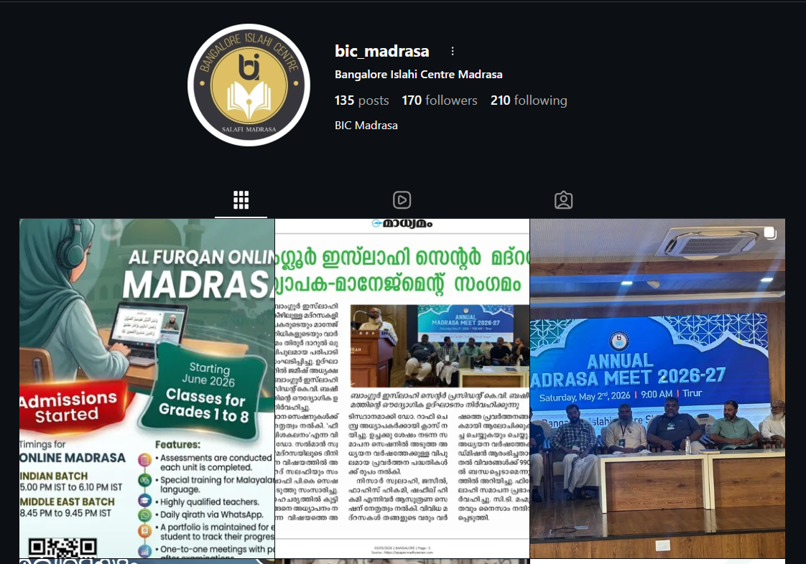
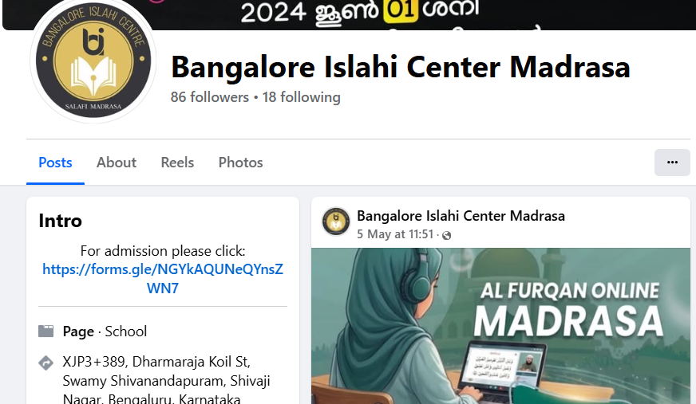

Bengaluru-based Islamic education
Professional, purposeful learning for the next generation.
Bangalore Islahi Center is presented here with a polished enterprise-style landing page that highlights structured learning, institutional trust, and a clear path for families exploring the madrasa.
Institution Profile
Placeholder data
Bangalore Islahi Center
Quran-centered education, disciplined learning, and community guidance in a calm, modern institutional setting.
Placeholder curriculum pathways for Quran, Islamic studies, and student development.
Clear communication, approachable teaching, and a welcoming environment for guardians.
Built to support long-term growth through knowledge, discipline, and shared values.
Why this direction
A cleaner institutional presence that feels credible and future-ready.
This version intentionally borrows the confidence of a modern technology company website: bold headline hierarchy, crisp content blocks, clean surfaces, and strong calls to action. It feels more professional, more serious, and more launch-ready.
01
Sharper navigation and clearer information architecture.
02
Premium visual restraint with less decoration and more clarity.
03
Placeholder-ready content system for future institutional updates.
Programs
Learning tracks presented with the clarity of a product portfolio.
Quran Foundations
Placeholder details for tajweed, recitation improvement, and guided progress across different student levels.
Learn moreIslamic Studies
Placeholder details for aqeedah, fiqh, seerah, and structured theory classes in an approachable format.
Learn moreChildren and Youth
Placeholder details for age-based batches, discipline-building, and steady spiritual formation for younger learners.
Learn moreCommunity Sessions
Placeholder details for family circles, seasonal lectures, and open sessions for the broader local community.
Learn moreOur Madrasa Branches
Explore our branches across Bengaluru and online learning programs.
Institutional impact
Designed to communicate trust, consistency, and educational purpose.
Instead of feeling ornamental, the page now behaves like a serious organization homepage. It creates confidence through clarity, measured spacing, and concise storytelling.
Contact
Ready for final institution details whenever you have them.
All unavailable information is currently shown as placeholder content so the design stays presentation-ready while details are being finalized.
Address
XJP3+389,Dharmaraja Koil St, Swamy Shivanandapuram, Shivaji Nagar, Bengaluru, Karnataka 560051
Phone
+91 9900 001 339
Email
bicmadrasa@gmail.com
Hours
Friday,Saturday,Sunday
Follow Us
Stay connected with Bangalore Islahi Center on social media.

